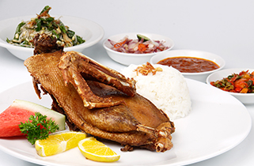
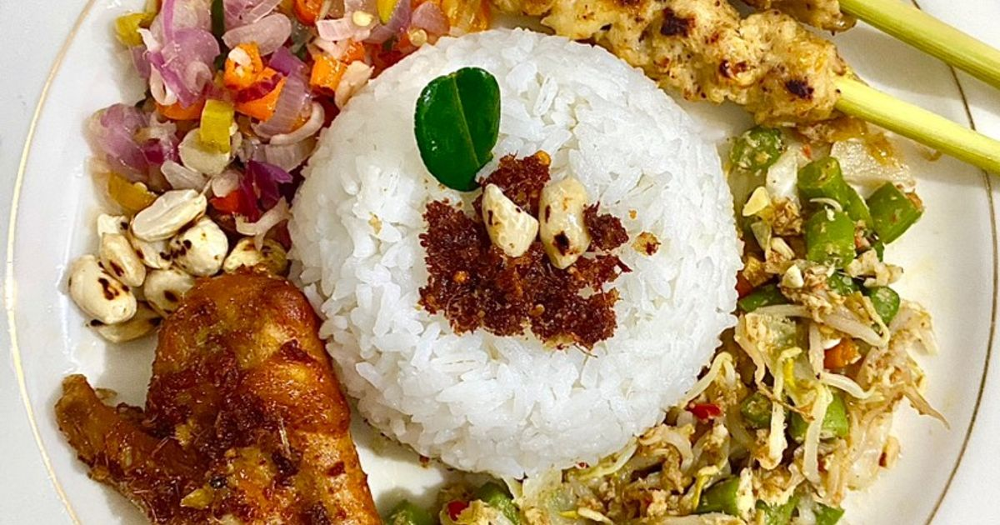

Bali
KULINER
wisata kuliner khas Bali.
Non-halal.

Babi Guling
Kuliner khas Bali yang paling terkenal, terbuat dari babi utuh yang dipanggang dengan bumbu rempah Bali hingga kulitnya renyah dan dagingnya lembut. Biasanya disajikan dengan nasi, lawar, dan sambal khas.
📍 Rekomendasi:
˚☽˚.⋆ Warung Babi Guling Ibu Oka - Jl. Tegal Sari No.2, Ubud
˚☽˚.⋆ Babi Guling Chandra - Jl. Teuku Umar No.10, Denpasar
°.✺⋆Warung Babi Guling Ibu Oka Location °.✺⋆Babi Guling Chandra Location
Nasi Campur Bali
Hidangan khas yang terdiri dari nasi putih dengan aneka lauk seperti ayam suwir, sate lilit, lawar, sambal matah, dan telur pindang. Rasa gurih dan pedasnya khas Bali.
📍 Rekomendasi:
˚☽˚.⋆ Warung Wardani - Jl. Yudistira No.2, Denpasar
˚☽˚.⋆ Nasi Ayam Kedewatan Ibu Mangku - Jl. Kedewatan No.18, Ubud
°.✺⋆Warung Wardani Location °.✺⋆Nasi Ayam Kedewatan Ibu Mangku Location
Sate Babi
Sate dengan bumbu manis pedas khas Bali, dibakar hingga sedikit gosong dan harum. Cocok disantap dengan lontong atau nasi hangat.
📍 Rekomendasi:
˚☽˚.⋆ Sate Babi Bawah Pohon - Jl. Sunset Road, Kuta
˚☽˚.⋆ Made’s Warung Seminyak — Jl. Raya Seminyak Nomor 7
°.✺⋆Sate Babi Bawah Pohon Location °.✺⋆Made’s Warung Seminyak LocationBali
KULINER
wisata kuliner khas Bali.
Halal.

Bebek Bengil
Bebek goreng legendaris dengan kulit renyah dan daging lembut. Disajikan dengan nasi, sambal matah, dan sayuran segar.
📍 address
˚☽˚.⋆ Bebek Bengil - Jl. Hanoman, Ubud
˚☽˚.⋆ Bebek Tepi Sawah - Jl. Raya Goa Gajah, Peliatan
°.✺⋆Bebek Bengil Location °.✺⋆Bebek Tepi Sawah Location

Nasi Ayam Bali
Nasi dengan ayam suwir, sate lilit, sambal, dan lawar khas Bali. Rasanya pedas gurih, pas untuk makan siang cepat tapi nikmat.
📍 address
˚☽˚.⋆ Nasi Ayam Men Weti - Jl. Segara Ayu No.8, Sanur
˚☽˚.⋆ Nasi Ayam Ibu Oki - Jl. Siligita No.27, Nusa Dua
°.✺⋆Nasi Ayam Men Weti Location °.✺⋆Nasi Ayam Ibu Oki Location